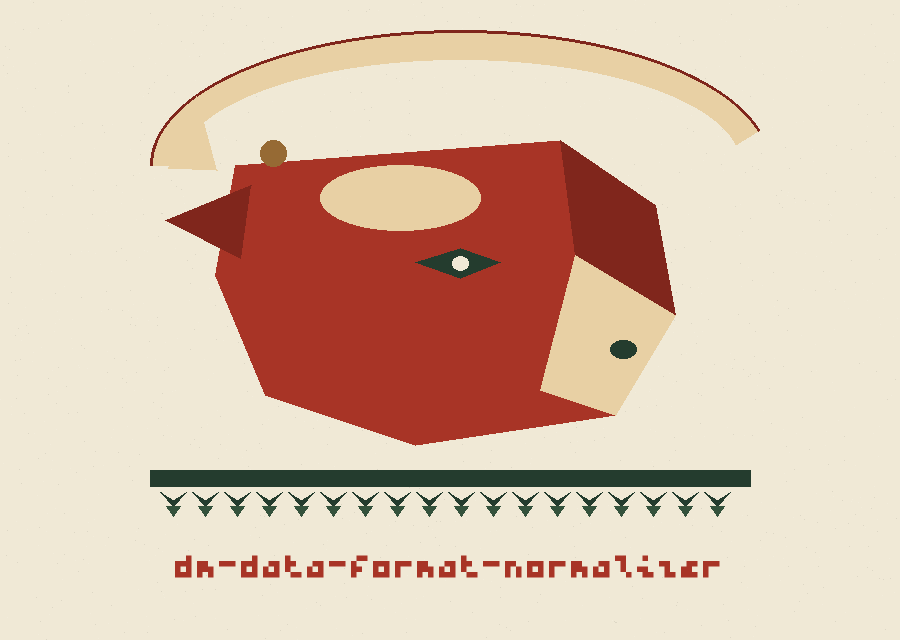
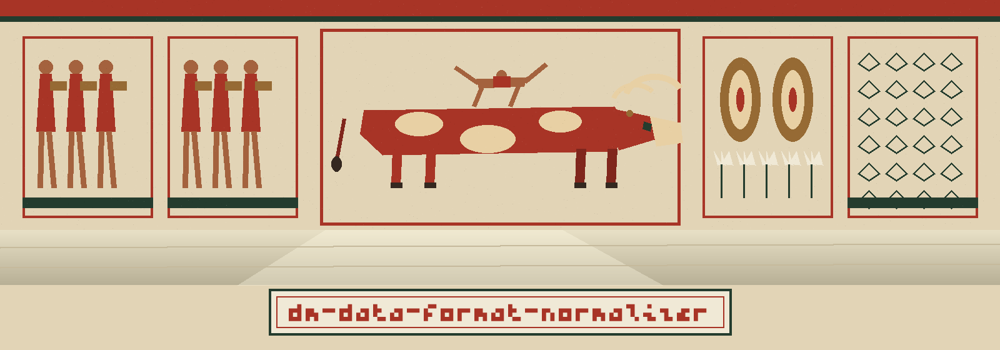

dm-data-format-normalizer: Minoan Bull Court Frescoes
dm-data-format-normalizer: Minoan Bull Court Frescoes names itself in that form throughout this page. The page is arranged as a palace wall read in panels, left to right, top tier then lower tier. Ground is marble white warmed toward plaster. Panels sit on that ground with roman red borders and cypress corners. Headings are set in Bytesized in roman red. Body text is set in Alegreya Sans in bronze darkened toward brown black.


Kind of Data Data to Normalize
One Standard Dress
Quirks Left at the Gate
Dates Need Their Incoming Shape
Kinds the Page Will Not Guess
Plate one: the job
Values arrive in mixed formatting dress. They leave in one standard dress, and the quirks that could mark a single value out are taken off on the way through. The program consistently formats data, such as phone numbers or dates, to a predefined standard. This makes identifying true values more difficult by removing distinguishing formatting characteristics that can act as identifiers.
Plate two: scope, carefully
Phone numbers and dates are illustrations, not a closed list, because the type control is printed with no list of accepted kinds beside it. Data type conversion is stated as part of the job where normalization needs it. The tool is tied to programs designed to generate or mask sensitive data with realistic-looking but meaningless values.
Note, at full size: this site will not guess at further kinds the README never names.
Plate three: dates
An input format must be given for date work. The README illustrates the incoming arrangement with the format pattern '%m/%d/%Y'. An output format has a stated default, the format pattern '%Y-%m-%d'. Placeholders occupy every data position on this plate. No calendar day from any person's records appears here, because the source prints format patterns only, arrangements of month, day, and year markers, and no actual date at all.
Plate four: the panel of the wrong name
git clone https://github.com/ShadowGuard-AI/dm-data-format-normalizer
The clone command above names the organisation that actually owns this repository, hyphen included, and that showing is labelled here as a correction in plain view, not as a quiet repaint. The fetched line was wrong in a specific way, counted openly: ShadowStrikeHQ occurs 2 times across the fetched README, once in the install line and once in the closing licence line. ShadowGuard-AI occurs 0 times there. ShadowGuardAI occurs 0 times there. This site would rather exhibit the count than conceal the repaint under fresh plaster.
Plate five: invocation as architecture
./dm-data-format-normalizer [params]
A program call forms the lintel. Beneath it, placeholders mark where kind, data, and options would stand: a kind placeholder, a data placeholder, an incoming format placeholder, an outgoing format placeholder, a logging placeholder. A notice carved beside that frame warns visitors that the README itself stages no worked call, so nothing on this panel impersonates a demonstration the source never gave. The README prints no worked normalization, no specimen date being converted, and no before and after pair of strings.
Plate six: the six controls in procession
Help opens the procession: -h shows the help message and exits. Kind follows: --type declares the type of data to normalize, with no roster of kinds printed beside it. Data follows: --input supplies the input data to normalize, with no shape stated for it. Incoming format follows: --input_format supplies the input date format, carries the example pattern '%m/%d/%Y', and is required when dates are the work. Outgoing format follows: --output_format supplies the output date format and defaults to '%Y-%m-%d'. Logging level closes the procession: --log_level sets the logging level and defaults to INFO. Each stated default is attached to its owner and no default is attached to any other control.
Plate seven: rights, in contrast
On one side, the README closing line survives in the record block below with its wrong organisation name intact, preserved rather than freshened: Copyright (c) ShadowStrikeHQ. On the other side, the separate LICENSE fact is set in miniature: the document grants MIT terms, and its ownership line is recorded by construction only, a public pen name leading, a bracketed pairing of a given name with one initial following, and the account handle closing, with that initial never opened here.
Those two sides do not agree.
The preserved README record
 # dm-data-format-normalizer Consistently formats data, such as phone numbers or dates, to a predefined standard. This makes identifying true values more difficult by removing distinguishing formatting characteristics that can act as identifiers. Handles data type conversions where necessary for normalization. - Focused on Tools designed to generate or mask sensitive data with realistic-looking but meaningless values ## Install `git clone https://github.com/ShadowStrikeHQ/dm-data-format-normalizer` ## Usage `./dm-data-format-normalizer [params]` ## Parameters - `-h`: Show help message and exit - `--type`: The type of data to normalize. - `--input`: The input data to normalize. - `--input_format`: The input date format (required for date normalization). Example: '%m/%d/%Y' - `--output_format`: The output date format (default: '%Y-%m-%d') - `--log_level`: Set the logging level (default: INFO) ## License Copyright (c) ShadowStrikeHQ
Frescoes survive because nobody paints over the damaged panel to make the room look tidy, and the block above is treated with the same restraint. Both of its ownership lines name ShadowStrikeHQ, an organisation that is not this repository's owner in any current spelling. They remain in the block because the block is evidence. The corrected acquisition line lives on plate four, labelled as a correction, where a repaint belongs: on the new surface, announced, never passed off as original plaster.